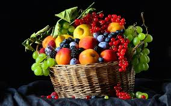
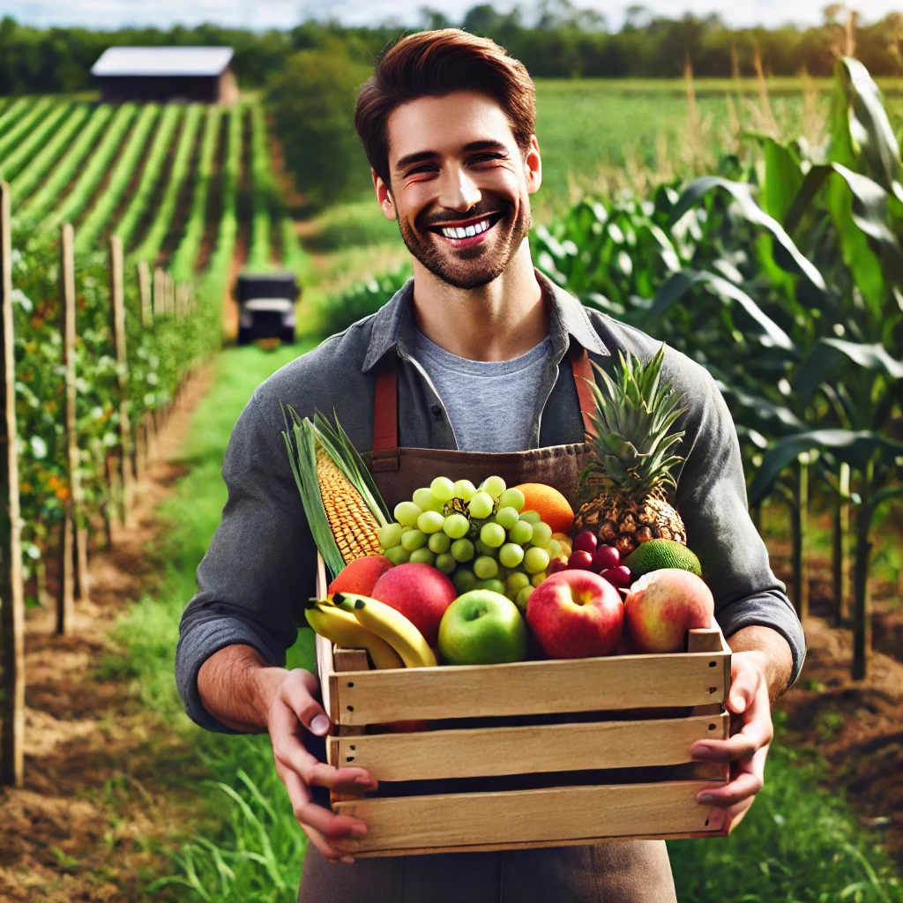
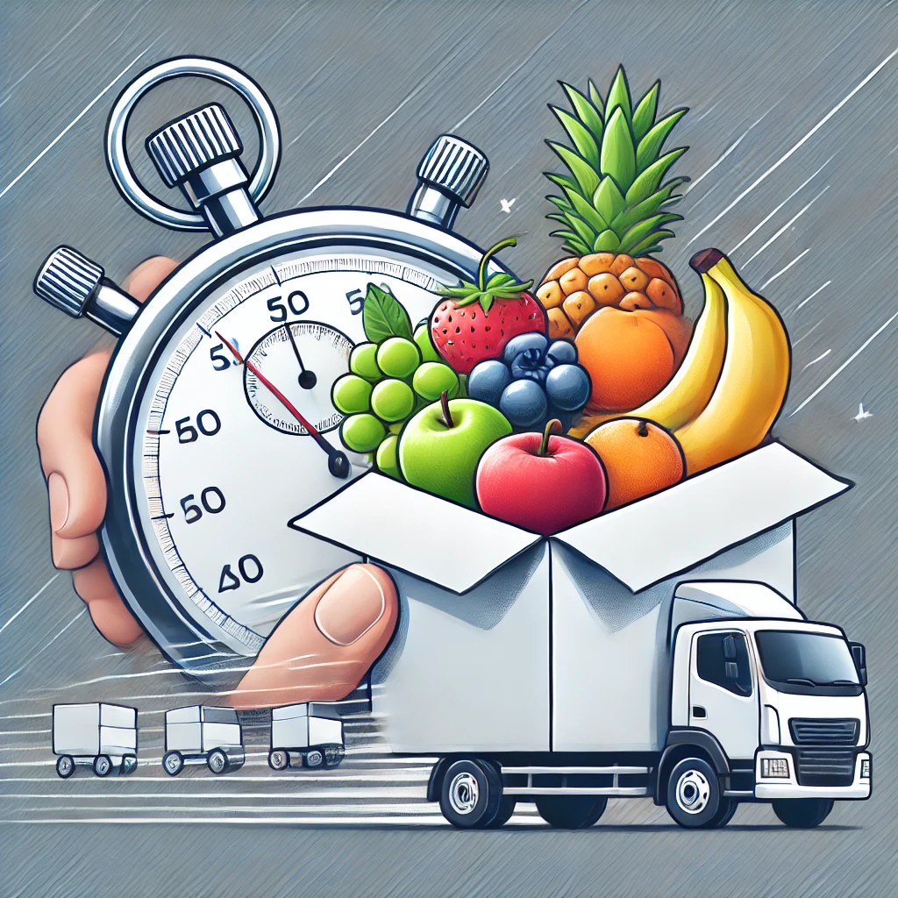
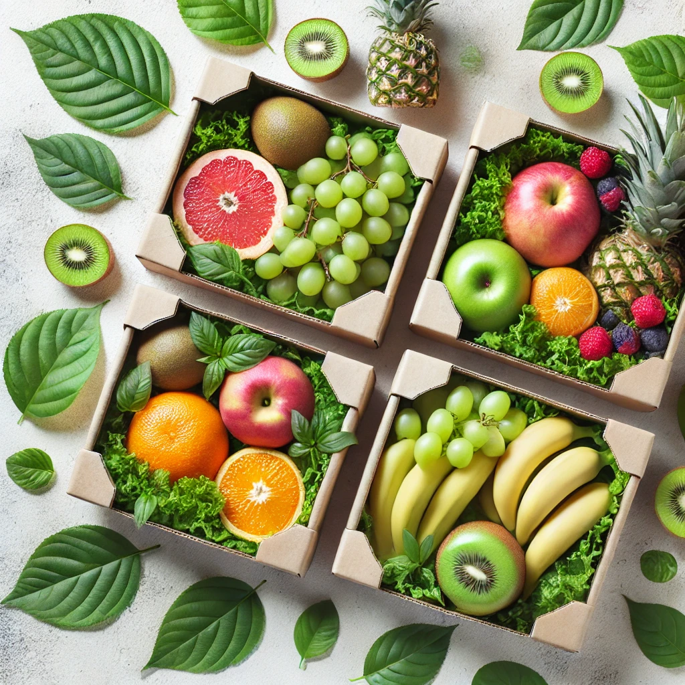

Bridging the gap between honest organic orchards and health-conscious families.
Farm2Bite was born out of a simple frustration: grocery store produce that looks vibrant on the outside but lacks natural taste, aroma, and vitality.
We are an agricultural-first collective partnering directly with generational, pesticide-free farms. We skip wholesale distributors, cold-storage warehouses, and chemical wash centers to bring you seasonal fruits exactly as mother nature intended.
Our commitment is two-fold: Empowering Indian farmers with fair profit margins and nourishing urban homes with verified, chemical-free nutrition.
Every fruit you bite into supports regenerative farming practices, zero synthetic fertilizers, and biodegradable delivery packaging that keeps our planet green and healthy.

We prohibit artificial carbide ripening, wax coatings, and chemical preservatives. Our fruits grow at their own pace, soaking in real sunlight and mineral-rich soils to give your family pure, disease-fighting antioxidants and unmistakable natural sweetness.
Conventional supermarket fruits sit in cold warehouses for weeks before reaching your basket. At Farm2Bite, produce harvested yesterday arrives at your doorstep today — preserving sensitive vitamins and delivering farm aroma straight to your kitchen.


Healthy living should not be a luxury. By cutting out supply-chain middlemen, we guarantee that local agricultural workers receive higher earnings while your family enjoys premium organic fruits at competitive marketplace rates.
We protect produce and nature simultaneously. Every order is packed using recycled brown boxes, vented paper pockets, and biodegradable straw cushioning — keeping your fruits bruise-free with zero single-use plastic waste.
